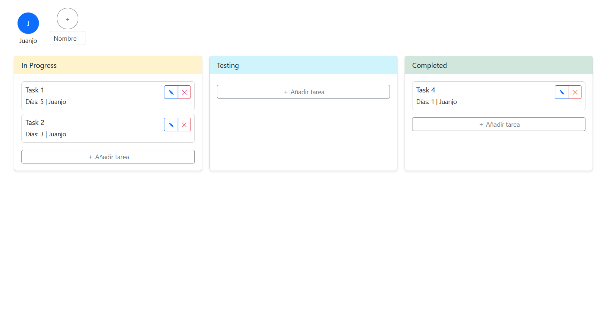

Resumen profesional
Soy un desarrollador de software con una fuerte orientación al detalle y una gran pasión por la programación y la mejora continua. A lo largo de mi trayectoria me he especializado en tecnologías como .NET, JavaScript (Angular y Node.js), SQL y Java, participando en diferentes proyectos tanto académicos como profesionales.
Mi experiencia incluye trabajo en desarrollo de aplicaciones empresariales, automatización de procesos y mantenimiento de código existente. Me destaco por mi capacidad de adaptación, mi entusiasmo por aprender nuevas herramientas y mi compromiso con la calidad del código.
Además de mis conocimientos técnicos, tengo habilidades blandas como el trabajo en equipo, la comunicación efectiva y la capacidad de análisis. Estoy siempre abierto a colaborar en proyectos donde pueda aportar valor y seguir creciendo profesionalmente.
Puedes ver más detalles en mi perfil de LinkedIn: linkedin.com/in/JuanJoseFernandez
Proyectos

Task Tracker (Gestor de Tareas)
Aplicación desarrollada en Angular para la gestión visual de tareas mediante columnas de estado (Kanban): In Progress, Testing y Completed. Permite añadir, editar, eliminar y mover tareas, con animaciones suaves y una interfaz limpia e intuitiva.
Ver proyecto en vivoArqyest (Plataforma de Consultoría Arquitectónica)
Web desarrollada con Angular que permite a estudios y consultoras presentar y difundir proyectos de arquitectura y urbanismo. Arqyest actúa como catálogo de servicios y proyectos, con un diseño profesional y adaptable, pensado para clientes institucionales y privados.
Ver proyecto en vivo